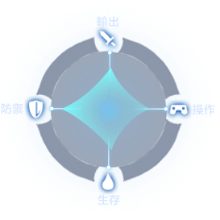
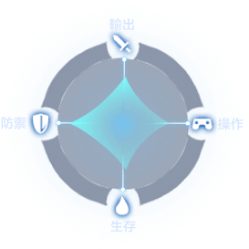

官方正版奇蹟手遊
首页
Home
新聞資訊
News
職業廣場
Professional
攻略資料
Strategy
次元魔方
Dimensional
勇士社區
Warriors
蓄力向前撞去，对前方敌人造成伤害。
战士挥舞武器，对前方一定范围内的目标造成伤害。
剑士激发自身强大的战意，为自身增加减伤护盾，减少受到的伤害5%，持续6秒。
全力向前发起刺击，对前方敌人造成伤害。
剑士用他强大的力量进行一次跳跃重击，对大范围内的目标造成伤害。
剑士凝聚战意对前方目标造成破坏性的打击，对前方扇形区域造成伤害。
像旋風一樣揮舞手中的武器，對周圍的目標造成傷害，持繼2s.
圣光照耀，提升自身生命值上限，持续30分钟。
像旋風一樣揮舞手中的武器，對周圍的目標造成傷害，持續2秒，結束時額外造成一次群體傷害。
劍士為迴旋斬附加寒冰效果，對周圍的目標造成傷害，持續2秒，同時附加減速效果，持續3秒。
劍士揮舞武器進行強力揮掃，對大範圍內的目標造成傷害。
劍士揮舞武器進行暴怒壹擊，對前方壹定範圍內的目標造成傷害的同時，額外造成35%傷害。
破壞壹擊中附加寒冰穿刺，對前方扇形區域造成傷害時，附加減速效果，持續4秒。
破壞壹擊中附加破甲效果，對前方扇形區域造成傷害時，額外附加40%傷害。
劍士釋放盾墻時發動聖光守護，為自身增加持續6秒的減傷5%護盾，同時每秒回復10%傷害加成的血量，持續4秒。
劍士釋放盾墻時激發血色戰意，為自身增加持續6秒減傷5%護盾，同時對周圍的怪物進行嘲諷，持續6秒。
劍士用他強大的力量進行壹次跳躍重擊，對大範圍內的目標造成傷害的同時，附加燃燒效果，每秒造成20%傷害，持續3秒。
劍士用他強大的力量進行壹次跳躍重擊，對大範圍內的目標造成傷害的同時，附加眩暈效果，持續1秒。
凈化自己，驅散自身所有控制效果後蓄力向前撞去，對前方敵人造成傷害。
蓄力向前撞去，對前方敵人造成更多傷害。
聖光照耀，提升自身以及周圍隊友的生命值上限，持續30分鐘。
聖光照耀，提升自身生命值上限並獲得10秒的反傷。
全力向前發起刺擊，對前方敵人造成傷害並附帶10秒破甲效果。
全力向前發起刺擊，對前方敵人造成更多傷害。
魔法师释放魔法让暴风雪降临，对一定范围内的目标造成伤害的同时，附带持续2秒的减速效果。
魔法师释放出地狱中的黑龙，对一定范围内的目标造成伤害。
魔法师汇聚极光之力向前方发起强力冲击，对直线距离内的目标造成伤害。
魔施法召唤龙卷风，将自身前方敌人卷到风中造成伤害
魔法神降临，提升自身攻击力，持续6秒。
魔召唤守护结界，为自身添加一个护盾，持续1800秒。
魔法师利用空间魔法瞬间移动到前方，并对落点附近的目标造成80%伤害。
魔法师凝聚大地之力，在自身前方召唤陨石，对陨石附近的目标造成伤害。
魔法師利用地獄黑龍組成法陣，對大範圍內的目標造成傷害。
魔法師激發出地獄黑龍的怒意，對周圍的目標造成傷害時，額外附加24%傷害。
魔法師在極光中附加烈焰之力，對更大範圍內的目標造成傷害時，額外造成40%傷害。
魔法師把極光凝聚成冰龍進行突襲，對前方直線距離內的目標造成傷害時，額外附加持續4秒的減速效果。
魔法師為暴風雪中註入強大的魔力令其蔓延，對大範圍內的目標造成傷害的同時，附帶持續2秒的減速效果。
魔法師為暴風雪附加冰霜光環，對壹定範圍內的目標造成傷害的同時，附帶持續4秒的強化減速效果。
魔法師利用空間魔法在時空中進行短暫漫步，並對落點附近的目標造成80%傷害；同時獲得持續4秒的免控效果。
魔法師進行瞬間移動時造成空間震蕩，對落點附近的目標造成80%傷害時，額外造成80%傷害。
魔法師在自身前方召喚天外隕石，對隕石附近的目標造成傷害，同時附加持續1秒的擊暈效果。
弓箭手釋放穿透箭時附帶強烈震盪，穿透直線距離內的目標並造成傷害的同時，對目標造成持續1秒的眩暈效果。
法神光芒照耀，提升自身以及周圍隊友的攻擊力，持續6秒。
法神附體，大幅提升自身攻擊力，效果持續6秒。
增加護盾血量及減傷比例。
魔法師召喚守護結界，為自身添加壹個護盾，持續1800秒；護盾消失時會對自身周圍敵人造成傷害。
魔法師施法召喚雷電龍卷風，將自身前方敵人卷到風中造成傷害。
翻身躲避，在落地時向前射出一箭對前方敵人造成傷害並附帶4秒減速效果。
弓箭手引动寒冰之力发射箭矢，对一定范围内的目标造成伤害。
弓箭手积蓄力量进行一次超强射击，穿透直线距离内的目标并造成伤害。
弓箭手快速的射出多重箭矢，对前方扇形范围内的目标造成伤害。
翻身躲避并在落地时向前射出一箭。
召唤守护精灵，瞬间治疗自己。
弓箭手凝聚力量向天堂发出感召，对一定范围内的目标造成伤害。
弓箭手可以召唤出一只成长期巴里。巴里会跟随并帮助主人战斗，存在时间40秒。
领悟战神之道，瞬间提升自身攻击力，效果持续1800秒。
弓箭手使用大量箭矢進行快速散射，對大範圍內的目標造成傷害。
弓箭手為多重箭矢附加火焰之力，對前方扇形範圍內的目標造成傷害的同時，額外附加24%傷害。
弓箭手釋放天堂箭雨，對大範圍內的目標造成傷害。
弓箭手在憤怒狀態下發動天堂之箭，對一定範圍內的目標造成傷害的同時，額外附加40%傷害。
弓箭手增強寒冰之力的釋放，對大範圍內的目標造成傷害。
弓箭手发射箭矢時釋放極寒封印，對一定範圍內的目標造成傷害的同時，額外對前方目標造成持續1秒的定身效果。
弓箭手可以召喚出特殊戰寵-黃金鬥士，黃金鬥士自帶散攻擊射技能，存在時間40秒。
弓箭手可以召喚出一隻成熟期巴里，成熟期的巴里自帶嘲諷技能，存在時間40秒。
弓箭手在進行穿透箭時釋放卓越一擊，穿透直線距離內的目標並造成傷害的同時，為自身附加持續3秒的卓越提升。
召喚守護精靈，瞬間治療自己並附帶持續回復效果。
召喚守護精靈，瞬間治療自己及周圍隊友並附帶少量持續回復效果。
習得戰神之法，瞬间提升自身的攻擊力以及閃避等級，效果持續1800秒。
習得戰神之光，瞬间提升自身以及周圍隊友的攻擊力，效果持續1800秒。
淨化自身，驅散所有控制效果，翻身躲避並在落地時向前射出一箭。


 
